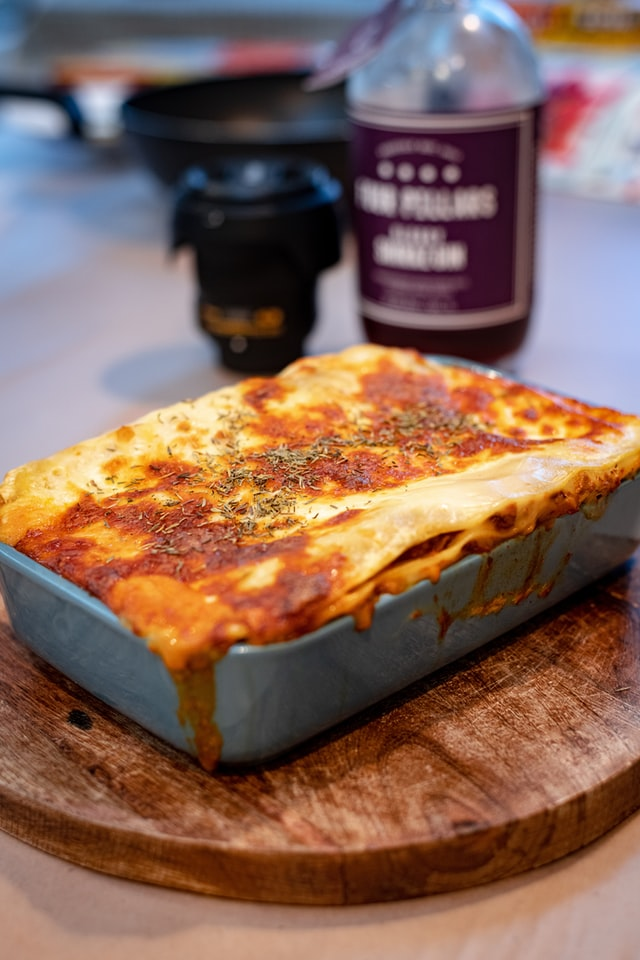

Lasagna

Description
This classic Italian soul food comes in a vegetarian variation. Ideal for cold evenings it warms your body and soul with pasta, tomato sauce and lots and lots of cheese.
Feel free to experiment on your own so you create the dish that best soothes your soul.
Ingredients
- lasagna sheets
- olive oil
- tomatoes
- tomato passata
- tofu
- onions
- red bell pepper
- cheese
- more cheese
- salt, pepper and garlic
- Italian herbs and spices
- margarine
- flour
- oatmilk
Steps
- mash tofu with your hands or a fork, then roast with oil until brown and crumbly
- while tofu is roasting, chop all vegetables and add them to the pan; add tomato passata
- melt margarine in a small pot, add flour and stir well, add oatsmilk until you like the sauce's consistency
- starting with the bechamel, add lasagna sheets and vegetable sauce, then start over in the same order
- finish with a thick layer of cheese
- cook in the oven at 200° for 40 minutes